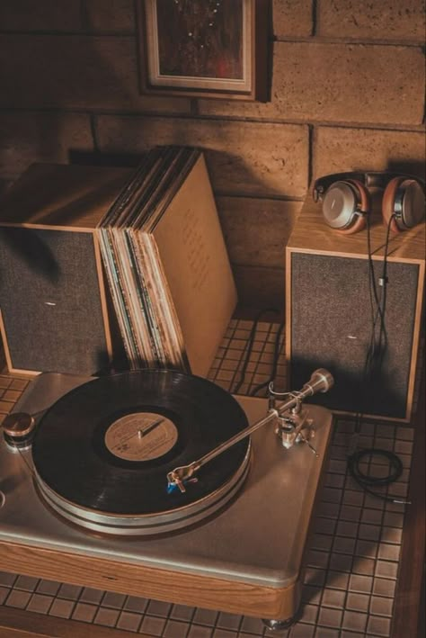
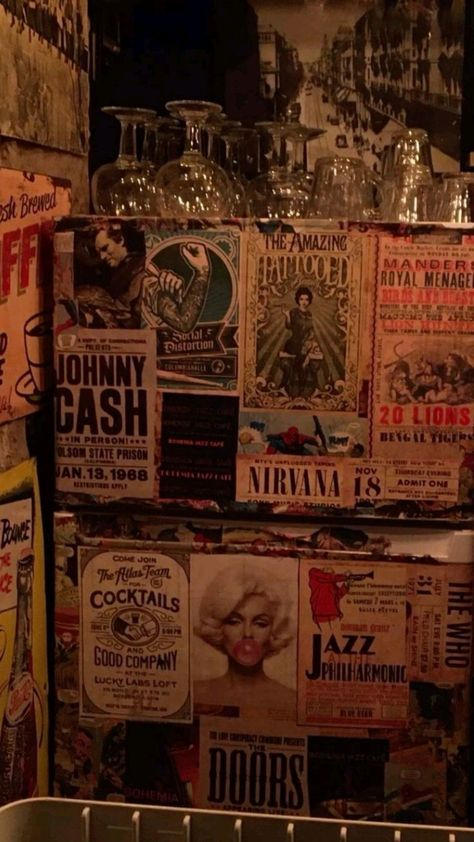

What is the fashion in the 30s ?
As the 1920s turned into the 1930s, womens fashion softly evolved from the boyish look of the previous decade into the feminine silhouette of the early thirties. With the stock market crash in 1929 and with the opening of the new decade, hemlines descended back to ankle length and waistlines moved back to their natural place.
Despite these departures from the prevailing mode of the previous decade, the popular styles of the early 1930s were similar in their simple lines to the popular garçonne look of the twenties. But while the simplicity of the 1920s created a sack-like silhouette free from curves, the simple lines of the early thirties hugged those curves, creating a soft, feminine silhouette. Cally Blackman, a lecturer on the history of fashion at Central Saint Martins, writes in 100 Years of Fashion, “By the early 1930s, the fashionable silhouette was evolving into a slender, elongated torso with widening shoulders and a neat head with softly waved short hair” . Though the lines were simple, the overall effect was one of complete sinuous femininity with a natural waist and skirts flaring out slightly at the ankle, as seen in a fashion illustration from 1935. Having gained popularity in the 1920s, designer Elsa Schiaparelli took her designs to another level in the 1930s, collaborating with surrealist artists such as Salvador Dalí and Jean Cocteau.
Of course, the Depression also had an influence on fashion, contributing to this democratization, especially in the United States. Before the 1930s, buyers would purchase copies of Paris designs and resell them in their home countries. However, as the Great Depression affected all areas of business and life in the US, new duties of ninety percent were imposed on the cost of these copies.By the end of the decade, Europe had entered into the Second World War and the US still had not yet left the Great Depression behind. As the thirties closed, the popular style of broad, padded shoulders, nipped in waists and shorter A-line skirts that would dominate the early 1940s had already emerged.

